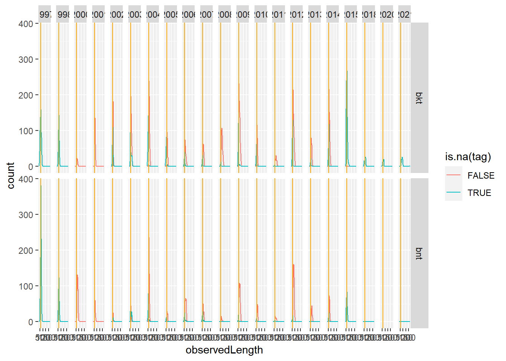

Chapter 4 Young-of-year Growth Model
The question here is what is driving body size variation across years in brook trout and brown trout in the WB?
We focus on ageInSamples == 1 (age-0 fish in the fall sample) fish for growth model. This is the first sampling occasion that most fish are big enough to tag. Not all fish are big enough, however, and there is a number of untagged fish each year. We need to include both tagged and untagged fish in our age-0 size model.
Factors to include in the model are
1. Sample date
2. Cumulative temperature prior to sampling
3. Cumulative flow prior to sampling
4. Extreme flow events?
5. Fish density, maybe total and age-0 across all three salmonids
4.1 Raw data
test
4.1.1 Trout, all locations
cd1 <- cdWB_electro %>% filter(ageInSamples == 1, species != 'ats')
ggplot(cd1 %>% filter(species == 'bkt'), aes(observedLength, color = is.na(tag))) +
geom_freqpoly() +
geom_vline(xintercept = 60) +
facet_grid(species + riverOrdered ~ year, scales = "free_y")
ggplot(cd1 %>% filter(species == 'bnt'), aes(observedLength, color = is.na(tag))) +
geom_freqpoly() +
geom_vline(xintercept = 60) +
facet_grid(species + riverOrdered ~ year, scales = "free_y")
4.1.2 Trout, in the WB mainstem only
cdWB1 <- cdWB_electro %>% filter(ageInSamples == 1, species != 'ats', riverOrdered == "west brook")
ggplot(cdWB1, aes(observedLength)) +
geom_freqpoly() +
geom_vline(xintercept = 60, color = 'orange') +
facet_grid(species ~ year)
ggplot(cdWB1, aes(observedLength, color = is.na(tag))) +
geom_freqpoly() +
geom_vline(xintercept = 60) +
facet_grid(species ~ year)
4.2 Why are there untagged fish bigger than 60mm?
Check 2002/bkt/WB, as an example
cdWB12002BKT <- cdWB1 %>% filter(year == 2002, species == "bkt")
table(is.na(cdWB12002BKT$tag))##
## FALSE TRUE
## 213 132 ggplot(cdWB12002BKT, aes(observedLength, color = is.na(tag))) +
geom_freqpoly() +
geom_vline(xintercept = 60)
cdWB12002BKT %>% filter(observedLength > 60, is.na(tag)) %>% data.frame()## tag detectionDate sampleName sampleNumber river section area observedLength survey pass observedWeight
## 1 <NA> 2002-09-18 41 31 west brook 8 inside 68 shock 1 3.5
## 2 <NA> 2002-09-19 41 31 west brook 13 inside 62 shock 1 2.8
## 3 <NA> 2002-09-23 41 31 west brook 15 inside 61 shock 1 2.4
## 4 <NA> 2002-09-23 41 31 west brook 16 inside 64 shock 1 2.6
## 5 <NA> 2002-09-23 41 31 west brook 17 inside 68 shock 1 3.1
## 6 <NA> 2002-09-24 41 31 west brook 23 inside 68 shock 1 3.2
## 7 <NA> 2002-09-30 41 31 west brook 31 inside 62 shock 2 2.4
## 8 <NA> 2002-09-30 41 31 west brook 32 inside 61 shock 2 2.5
## 9 <NA> 2002-10-01 41 31 west brook 35 inside 69 shock 1 3.4
## 10 <NA> 2002-10-04 41 31 west brook 80 below 74 shock 1 4.2
## 11 <NA> 2002-10-04 41 31 west brook 80 below 71 shock 1 4.0
## 12 <NA> 2002-10-04 41 31 west brook 0 below 69 shock 1 3.4
## 13 <NA> 2002-10-04 41 31 west brook 60 above 70 shock 1 3.6
## 14 <NA> 2002-10-04 41 31 west brook 60 above 68 shock 1 3.1
## 15 <NA> 2002-10-04 41 31 west brook 100 below 71 shock 1 4.1
## 16 <NA> 2002-10-04 41 31 west brook 60 below 71 shock 1 3.8
## 17 <NA> 2002-10-04 41 31 west brook 60 below 71 shock 1 3.6
## 18 <NA> 2002-10-04 41 31 west brook 40 below 77 shock 1 5.2
## 19 <NA> 2002-10-04 41 31 west brook 40 below 78 shock 1 4.7
## 20 <NA> 2002-10-04 41 31 west brook 40 below 71 shock 1 3.8
## 21 <NA> 2002-10-04 41 31 west brook 20 below 70 shock 1 3.8
## 22 <NA> 2002-10-04 41 31 west brook 20 below 68 shock 1 3.3
## comments cohort species dateEmigrated sex year season proportionSampled lagDetectionDate meanTemperature
## 1 shock scars/mort 2002 bkt <NA> <NA> 2002 3 1 2002-09-18 15.00319
## 2 shock scars/mort 2002 bkt <NA> <NA> 2002 3 1 2002-09-19 14.68938
## 3 tagging mort 2002 bkt <NA> <NA> 2002 3 1 2002-09-23 16.77944
## 4 slow 2002 bkt <NA> <NA> 2002 3 1 2002-09-23 16.77944
## 5 shock scars/mort 2002 bkt <NA> <NA> 2002 3 1 2002-09-23 16.77944
## 6 shock scars/mort 2002 bkt <NA> <NA> 2002 3 1 2002-09-24 14.72569
## 7 shock scars/mort 2002 bkt <NA> <NA> 2002 3 1 2002-09-30 11.86201
## 8 shock scars/mort 2002 bkt <NA> <NA> 2002 3 1 2002-09-30 11.86201
## 9 <NA> 2002 bkt <NA> <NA> 2002 3 1 2002-10-01 13.36111
## 10 <NA> 2002 bkt <NA> <NA> 2002 3 1 2002-10-04 13.41424
## 11 <NA> 2002 bkt <NA> <NA> 2002 3 1 2002-10-04 13.41424
## 12 <NA> 2002 bkt <NA> <NA> 2002 3 1 2002-10-04 13.41424
## 13 <NA> 2002 bkt <NA> <NA> 2002 3 1 2002-10-04 13.41424
## 14 <NA> 2002 bkt <NA> <NA> 2002 3 1 2002-10-04 13.41424
## 15 <NA> 2002 bkt <NA> <NA> 2002 3 1 2002-10-04 13.41424
## 16 <NA> 2002 bkt <NA> <NA> 2002 3 1 2002-10-04 13.41424
## 17 <NA> 2002 bkt <NA> <NA> 2002 3 1 2002-10-04 13.41424
## 18 <NA> 2002 bkt <NA> <NA> 2002 3 1 2002-10-04 13.41424
## 19 <NA> 2002 bkt <NA> <NA> 2002 3 1 2002-10-04 13.41424
## 20 <NA> 2002 bkt <NA> <NA> 2002 3 1 2002-10-04 13.41424
## 21 <NA> 2002 bkt <NA> <NA> 2002 3 1 2002-10-04 13.41424
## 22 <NA> 2002 bkt <NA> <NA> 2002 3 1 2002-10-04 13.41424
## meanFlow sectionOriginal riverOrdered inside yday ageInSamples isYOY lagSection distMoved lagObservedWeight
## 1 -0.04960486 8 west brook TRUE 261 1 TRUE NA NA NA
## 2 -0.05461786 13 west brook TRUE 262 1 TRUE NA NA NA
## 3 -0.06006055 15 west brook TRUE 266 1 TRUE NA NA NA
## 4 -0.06006055 16 west brook TRUE 266 1 TRUE NA NA NA
## 5 -0.06006055 17 west brook TRUE 266 1 TRUE NA NA NA
## 6 -0.06281770 23 west brook TRUE 267 1 TRUE NA NA NA
## 7 -0.03975789 31 west brook TRUE 273 1 TRUE NA NA NA
## 8 -0.03975789 32 west brook TRUE 273 1 TRUE NA NA NA
## 9 -0.03438682 35 west brook TRUE 274 1 TRUE NA NA NA
## 10 -0.03510296 80 west brook FALSE 277 1 TRUE NA NA NA
## 11 -0.03510296 80 west brook FALSE 277 1 TRUE NA NA NA
## 12 -0.03510296 0 west brook FALSE 277 1 TRUE NA NA NA
## 13 -0.03510296 60 west brook FALSE 277 1 TRUE NA NA NA
## 14 -0.03510296 60 west brook FALSE 277 1 TRUE NA NA NA
## 15 -0.03510296 100 west brook FALSE 277 1 TRUE NA NA NA
## 16 -0.03510296 60 west brook FALSE 277 1 TRUE NA NA NA
## 17 -0.03510296 60 west brook FALSE 277 1 TRUE NA NA NA
## 18 -0.03510296 40 west brook TRUE 277 1 TRUE NA NA NA
## 19 -0.03510296 40 west brook TRUE 277 1 TRUE NA NA NA
## 20 -0.03510296 40 west brook TRUE 277 1 TRUE NA NA NA
## 21 -0.03510296 20 west brook TRUE 277 1 TRUE NA NA NA
## 22 -0.03510296 20 west brook TRUE 277 1 TRUE NA NA NA
## lagObservedLength grWeight grLength minSample maxSample minYear moveDir sampleInterval drainage quarter_length river_meter
## 1 NA NA NA 10 92 1997 0 0 west 5.400 4542.85
## 2 NA NA NA 10 92 1997 0 0 west 4.850 4647.75
## 3 NA NA NA 10 92 1997 0 0 west 6.100 4692.05
## 4 NA NA NA 10 92 1997 0 0 west 4.900 4714.05
## 5 NA NA NA 10 92 1997 0 0 west 5.100 4734.05
## 6 NA NA NA 10 92 1997 0 0 west 5.375 4861.40
## 7 NA NA NA 10 92 1997 0 0 west 5.025 5026.00
## 8 NA NA NA 10 92 1997 0 0 west 5.000 5046.05
## 9 NA NA NA 10 92 1997 0 0 west 5.250 5108.65
## 10 NA NA NA 10 92 1997 0 0 west 5.475 4281.50
## 11 NA NA NA 10 92 1997 0 0 west 5.475 4281.50
## 12 NA NA NA 10 92 1997 0 0 west 6.675 4369.90
## 13 NA NA NA 10 92 1997 0 0 west 4.925 5432.70
## 14 NA NA NA 10 92 1997 0 0 west 4.925 5432.70
## 15 NA NA NA 10 92 1997 0 0 west 4.400 4261.75
## 16 NA NA NA 10 92 1997 0 0 west 4.550 4301.55
## 17 NA NA NA 10 92 1997 0 0 west 4.550 4301.55
## 18 NA NA NA 10 92 1997 0 0 west 5.975 4322.60
## 19 NA NA NA 10 92 1997 0 0 west 5.975 4322.60
## 20 NA NA NA 10 92 1997 0 0 west 5.975 4322.60
## 21 NA NA NA 10 92 1997 0 0 west 5.500 4345.55
## 22 NA NA NA 10 92 1997 0 0 west 5.500 4345.55
## confluence_river_meter riverMeter nPasses
## 1 0 4542.85 2
## 2 0 4647.75 2
## 3 0 4692.05 2
## 4 0 4714.05 2
## 5 0 4734.05 2
## 6 0 4861.40 2
## 7 0 5026.00 2
## 8 0 5046.05 2
## 9 0 5108.65 2
## 10 0 4281.50 2
## 11 0 4281.50 2
## 12 0 4369.90 2
## 13 0 5432.70 2
## 14 0 5432.70 2
## 15 0 4261.75 2
## 16 0 4301.55 2
## 17 0 4301.55 2
## 18 0 4322.60 2
## 19 0 4322.60 2
## 20 0 4322.60 2
## 21 0 4345.55 2
## 22 0 4345.55 2
## [ reached 'max' / getOption("max.print") -- omitted 46 rows ] # looks like untagged area=inside fish wee morts, the rest were above or below
ggplot(cdWB12002BKT, aes(observedLength, color = is.na(tag))) +
geom_freqpoly() +
geom_vline(xintercept = 60) +
facet_grid(~area)
# check 2003
ggplot(cdWB1 %>% filter(year == 2003, species == "bkt"), aes(observedLength, color = is.na(tag))) +
geom_freqpoly() +
geom_vline(xintercept = 60) +
facet_grid(~area)
# same story as 20024.3 Why no untagged fish at all for 2000 and 2001?
cdWB12000_2001BKT <- cdWB1 %>% filter(year %in% 2000:2001, species == "bkt")
table(is.na(cdWB12000_2001BKT$tag))##
## FALSE
## 343 table(cdWB12000_2001BKT$observedLength)##
## 57 58 59 60 61 62 63 64 65 66 67 68 69 70 71 72 73 74 75 76 77 78 79 80 85 90
## 18 23 23 26 20 28 19 14 28 23 20 21 9 14 8 11 3 8 4 5 6 5 1 3 2 1 cdWB12000_2001BKT %>% filter(observedLength < 60)## # A tibble: 64 x 45
## tag detectionDate sampleName sampleNumber river section area observedLength survey pass observedWeight comments
## <chr> <dttm> <chr> <dbl> <chr> <dbl> <chr> <dbl> <chr> <dbl> <dbl> <chr>
## 1 1bf0fc3a~ 2001-09-10 12:00:00 36 27 west~ 25 insi~ 58 shock 1 1.9 fish #1~
## 2 1bf0fc46~ 2001-09-07 12:00:00 36 27 west~ 20 insi~ 57 shock 1 1.9 0
## 3 1bf0fe50~ 2001-09-07 12:00:00 36 27 west~ 19 insi~ 59 shock 1 2.1 0
## 4 1bf0fe76~ 2001-09-07 12:00:00 36 27 west~ 20 insi~ 59 shock 1 2.1 0
## 5 1bf0fe84~ 2001-09-06 12:00:00 36 27 west~ 17 insi~ 59 shock 2 2.2 0
## 6 1bf0fe84~ 2001-09-10 12:00:00 36 27 west~ 25 insi~ 57 shock 1 1.9 0
## 7 1bf0fe88~ 2001-09-07 12:00:00 36 27 west~ 22 insi~ 58 shock 1 2 0
## 8 1bf0fe88~ 2001-09-10 12:00:00 36 27 west~ 30 insi~ 58 shock 1 2.1 0
## 9 1bf0fe8b~ 2001-09-06 12:00:00 36 27 west~ 18 insi~ 58 shock 2 2 0
## 10 1bf0fe95~ 2001-09-07 12:00:00 36 27 west~ 22 insi~ 58 shock 1 1.8 0
## # ... with 54 more rows, and 33 more variables: cohort <dbl>, species <chr>, dateEmigrated <date>, sex <chr>, year <dbl>,
## # season <dbl>, proportionSampled <dbl>, lagDetectionDate <dttm>, meanTemperature <dbl>, meanFlow <dbl>,
## # sectionOriginal <chr>, riverOrdered <ord>, inside <lgl>, yday <dbl>, ageInSamples <dbl>, isYOY <lgl>, lagSection <dbl>,
## # distMoved <dbl>, lagObservedWeight <dbl>, lagObservedLength <dbl>, grWeight <dbl>, grLength <dbl>, minSample <dbl>,
## # maxSample <dbl>, minYear <dbl>, moveDir <dbl>, sampleInterval <dbl>, drainage <chr>, quarter_length <dbl>,
## # river_meter <dbl>, confluence_river_meter <dbl>, riverMeter <dbl>, nPasses <dbl> ggplot(cdWB12000_2001BKT, aes(observedLength, color = is.na(tag))) +
geom_freqpoly() +
geom_vline(xintercept = 60)
means <- cdWB1 %>% group_by(species, year) %>% summarize(meanLength = mean(observedLength, na.rm = TRUE), meanYday = mean(yday, na.rm = TRUE))
ggplot(means, aes(year, meanLength, color = species)) + geom_point() + geom_line()
ggplot(means, aes(meanYday, meanLength, color = species)) + geom_point() + geom_smooth(method = “lm”)